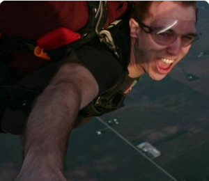
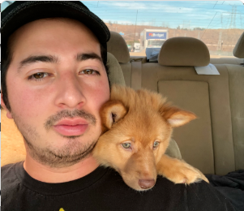
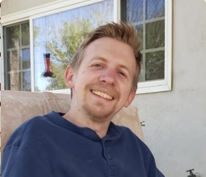
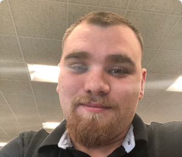
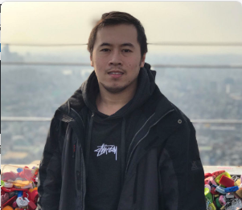

AJ Brush
Project Manager

Frontend developer with a focus on JavaScript & React with about 2 years experience in each.
Andre Orellana
UX Designer

Stuff goes here
Cody Caro
React Developer

I have been a game developer for 4 years and decided to learn something and expand on my development knowledge, which is why I went to Lambda and I am now becoming a Full-Stack Engineer. I have already created various React side project one of which is a rankings app for a new wrestling promotion called AEW.
Joshua Cowley
React Developer

My name is Joshua Cowley I prefer to go by Josh. I am originally from El Paso, TX. I have always been interested in the tech industry first starting out as common tech support before moving onto Network Engineering but have always wanted to move into a development role. I am currently working on a BS in Software Development with a major in C#. I have since found a passion for Full Stack Development where I am working on becoming a talented Full Stack Developer in multiple roles.
David Le
UI Developer

I'm David and I'm one of the UI of this project. Recently got into coding so to further my education, I've decided to join Lambda School to become a Web Developer.
Dev Name
UI Developer

Stuff goes here